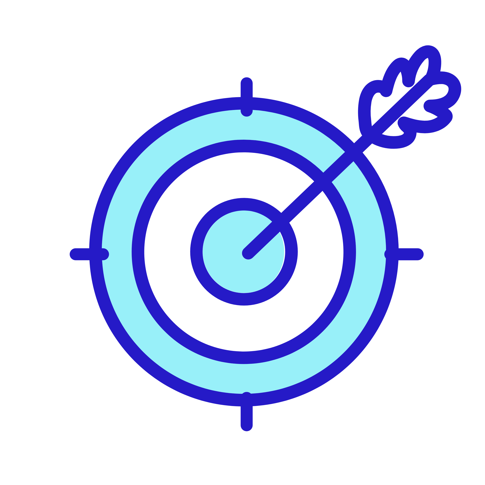
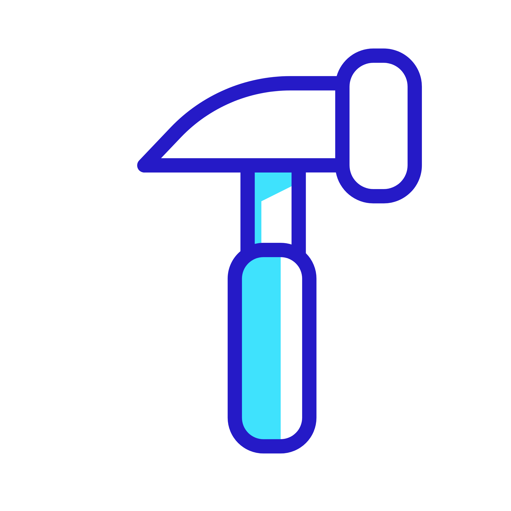
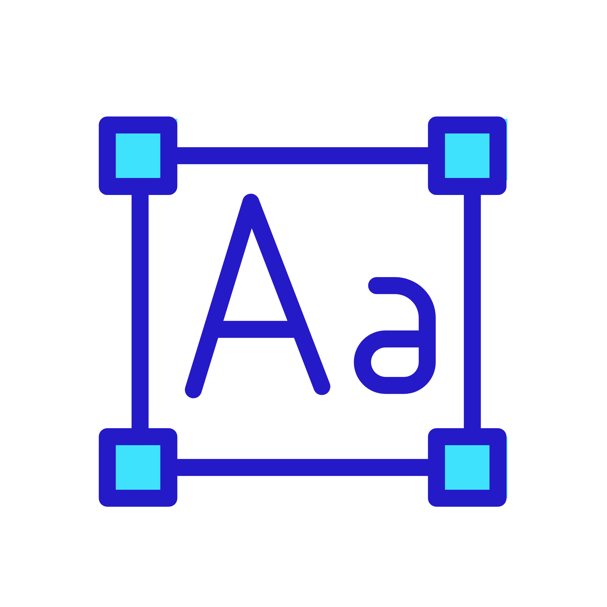
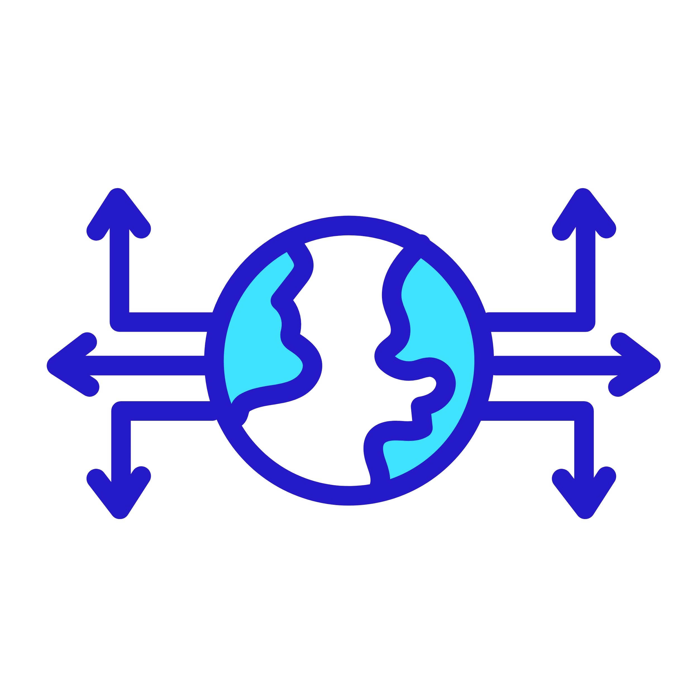
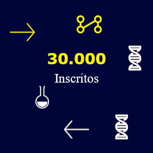
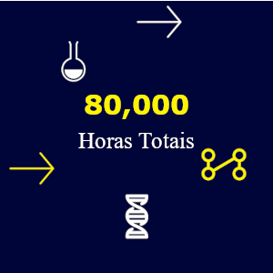
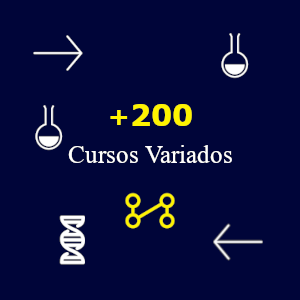

Trilhas personalizadas
Diagnóstico contínuo para adaptar conteúdos e garantir o desenvolvimento integral de cada pessoa.
Educação que move
Trilhas personalizadas, mentores certificados e tecnologia que potencializa o aprendizado em todas as etapas. A Umbrella conecta inovação, empatia e resultados para escolas, empresas e estudantes.
O que entregamos
Do socioemocional ao domínio técnico, nossas trilhas combinam mentorias ao vivo, desafios práticos e analytics de aprendizagem para acelerar resultados.

Diagnóstico contínuo para adaptar conteúdos e garantir o desenvolvimento integral de cada pessoa.
Professores e especialistas conectados para preparar estudantes para desafios reais e carreiras emergentes.
Comunidades seguras e acolhedoras, com suporte emocional e recursos de acessibilidade.
Hub de experiências
Nossos ambientes híbridos unem coworkings educacionais, laboratórios makers e salas de imersão para estimular foco, colaboração e criatividade.

Rituais de concentração, biogramas de energia e mentoria cognitiva para elevar a produtividade.

Módulos hands-on de design gráfico e motion com feedback de líderes criativos.
Cursos de inglês e espanhol com dinâmica cultural e acompanhamentos semanais.

Imersão em banco de dados, ciência de dados e governança para projetos críticos.



Perguntas frequentes
Separamos respostas objetivas para as dúvidas mais comuns sobre vestibulares, avaliações e suporte Umbrella.
As notas ficam disponíveis no painel Umbrella 24h após a liberação do professor. Você pode receber alertas automáticos por e-mail ou app mobile.
O processo é 100% digital, com simulados adaptativos e entrevistas síncronas. O candidato progride de acordo com o desempenho em trilhas diagnósticas.
Ele garante aderência ao curso escolhido e indica trilhas preparatórias para fortalecer competências essenciais antes do início das aulas.
Os calendários oficiais ficam no painel de eventos e são atualizados quinzenalmente com links para lives, simulados e plantões de dúvidas.
As provas contam com duas janelas: 90 minutos para objetiva adaptativa e 60 minutos para redação ou estudo de caso.
Oferecemos ciclos mensais, com possibilidade de reagendamento em até 48h antes da aplicação.
“Conhecimento é a chave que abre futuros expansivos.”
“Cada projeto e cada mentor na Umbrella foi essencial para sair do aprendizado passivo e construir soluções concretas. A cultura de experimentação nos prepara para criar impacto real.”
— Tomas Wayne, CIO na FutureLabs